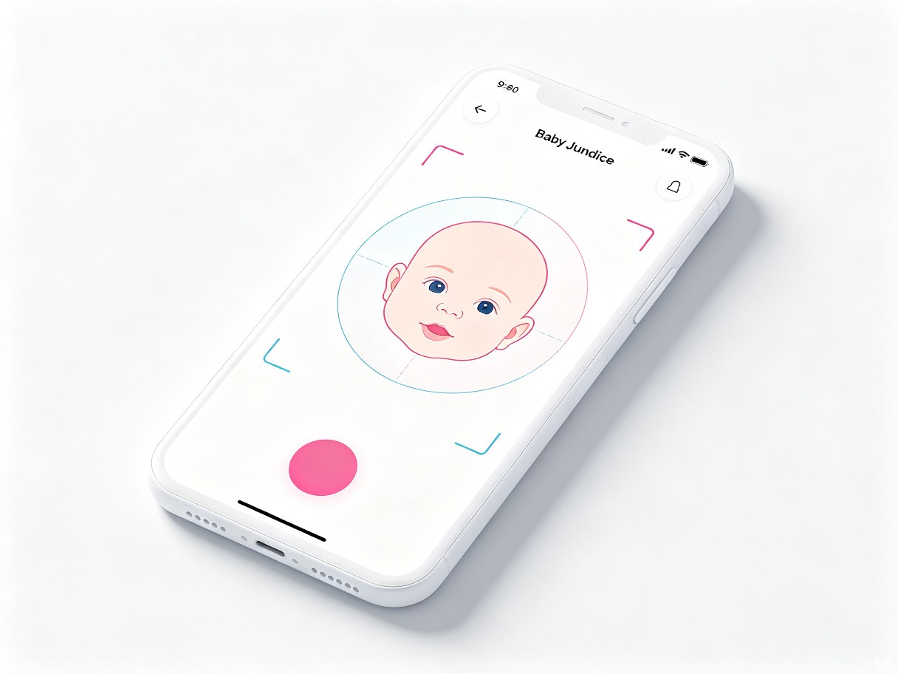
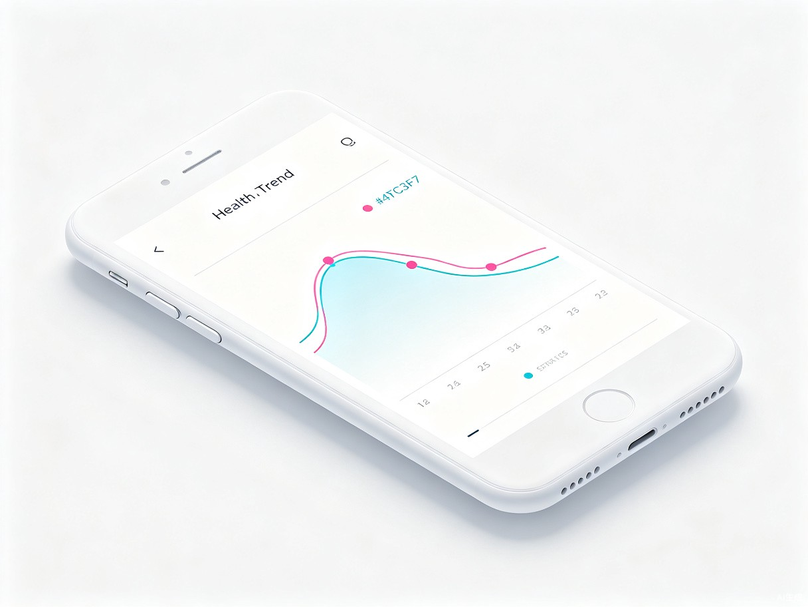
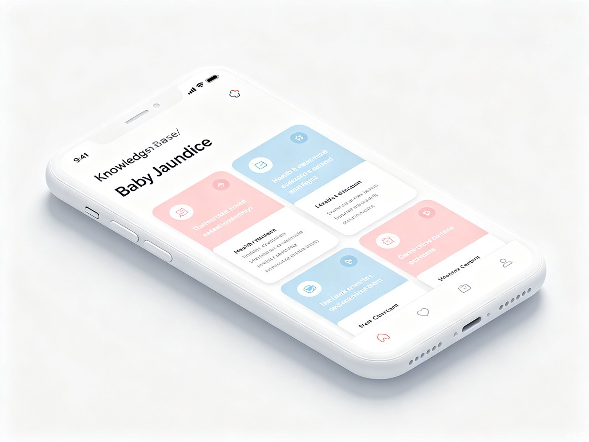

关于我
一个教育者的初心，一段用AI守护新生的旅程
🙌 我的故事
我是一名职业院校教师，长期关注新生儿护理领域的技术革新。在教学中，我经常和学生讨论新生儿黄疸这一常见问题——发病率高达60%，早产儿甚至可达80%，但家庭场景下却几乎没有有效的检测手段。家长只能靠"看"来判断，很多宝宝因此延误了最佳干预时机。
当我知道临沂市人民医院的临床团队研发了一种基于视觉AI的婴儿状态监测专利技术时，我就一直在想：能不能把这种医院级的技术，通过智能手机送到每个家庭手中？这次参加TRAE AI创造力大赛，终于让我把这个想法变成了现实。
🎨 TRAE 使用感受
说实话，我没有任何编程基础。如果不是TRAE，这个想法可能永远只停留在脑海里。
我和TRAE的配合过程让我感受最深的是——它真的在"听"我说话。我只需要用最日常的语言，把"我想要一个拍照就能检测黄疸的小程序"这个想法告诉它，它就能理解我的意图，帮我一步步把模糊的想法变成清晰的方案。
Demo 简介
一款为新生家庭设计的智能黄疸检测工具
是什么
"智护宝"是一款基于Web技术的跨平台婴儿黄疸AI智能检测小程序，手机和电脑端均可使用，无需下载安装。
面向谁
为新手父母、社区医护人员及育婴师打造的辅助工具，让黄疸检测不再依赖医院。
技术基础
灵感来源于临沂市人民医院临床团队发明专利，将医院级视觉AI分析能力带向千家万户。
面向用户群体
核心功能展示

拍照检测
调用手机摄像头或相册，上传婴儿皮肤照片，AI模拟分析黄疸风险等级（低/中/高），给出具体建议。

历史记录与趋势跟踪
记录每次检测数据，生成趋势折线图，直观追踪黄疸变化，掌握宝宝健康动态。

黄疸科普知识库
涵盖黄疸类型、症状、高危因素、居家护理建议、就医时机等6大知识模块，全方位科普。
Demo 创作思路
从临床专利到家庭应用，用技术守护每一个新生
💡 灵感来源
灵感来源于临沂市人民医院临床团队的发明专利（CN121617630A）。专利中描述了一种基于肤色分析的婴儿黄疸检测技术，可以将AI视觉分析能力应用于新生儿健康监测。我想让这项技术走出医院，服务千家万户。
想解决的问题
检测空白
家庭场景下缺乏有效的黄疸检测工具，家长只能凭肉眼判断。
知识匮乏
大多数新手父母对新生儿黄疸认知不足，不了解危险信号。
焦虑等待
担心宝宝黄疸反复，又不想频繁跑医院，陷入两难。
延误风险
病理性黄疸如不及时干预，可引发不可逆的胆红素脑病。
🚀 为什么做这个方向
新生儿黄疸是最常见的儿科问题之一，但家庭检测工具几乎是空白。这个方向切中了真实的社会需求，技术路径清晰（基于视觉AI），且符合社会公益赛道"青少年身心健康"和"智慧助老"的家庭健康延伸。虽然AI检测仅为辅助参考，但它能极大提升家长的警觉性和就医决策效率。
TRAE 实践过程
从零到一的完整开发历程
专利研读与创意梳理
将专利文档（CN121617630A）交给TRAE，提取核心技术方案，明确产品定位和功能范围。
创意提案生成
用TRAE Work生成创意产物HTML文件，形成完整的创意展示方案，用于大赛报名。
原型开发
基于创意方案，向TRAE描述详细的页面结构和交互需求，生成第一个可运行的Web应用原型。
功能完善与迭代
通过多轮对话，逐步完善拍照检测、历史趋势图、科普知识等核心功能，优化UI交互体验。
适配与优化
调整响应式布局，确保手机端和电脑端均有良好体验，最终形成完整Demo。